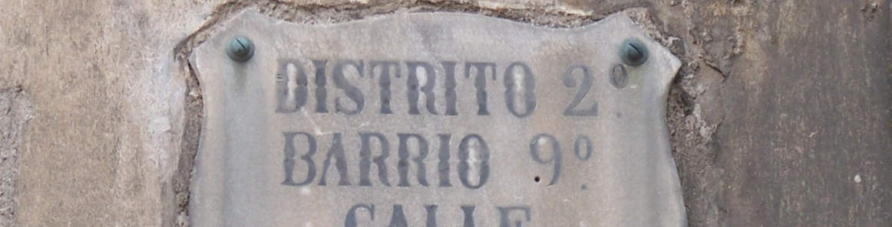
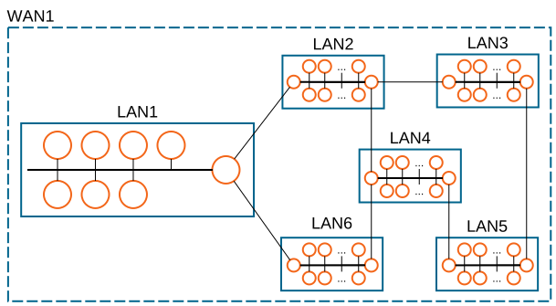
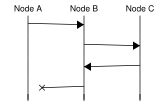

[3] Adreçament¶
Connectar dos ordinadors els fa molt més útils que dues màquines aïllades. Tanmateix, el seu veritable potencial només es desbloqueja quan es poden connectar a moltíssims altres ordinadors.
Limitacions pràctiques com el cost i la ubicació geogràfica fan que sigui impossible connectar directament cada parell d’ordinadors. En lloc d’això, els dispositius es distribueixen en un graf de xarxes interconnectades, que es pot estendre fins i tot més enllà de l’escala d’un planeta.
Tant si és localment, a l’abast físic, com en un altre continent, cal un sistema d’adreçament per identificar, localitzar i encaminar els missatges perquè arribin als peers (parells) previstos, tal com fem amb les ubicacions físiques.
[3.1] Si us plau, contacta’m¶
Quan només hi intervenen \(2\) dispositius, es pot fer servir una connexió punt a punt. En aquest tipus de connexió, només hi ha “aquest costat” i “l’altre costat” del cable. A més, quan un dispositiu vol comunicar-se amb l’altre extrem, només hi ha un enllaç (p. ex., un cable) on triar, de manera que no hi ha cap confusió possible. Com que podem fer funcionar aquesta connexió amb només \(2\) targetes de xarxa (també: controlador de xarxa, NIC) i \(1\) cable, les connexions punt a punt són viables per a \(N=2\) dispositius.

Si volem connectar \(N > 2\) dispositius, una opció ingènua és connectar cada dispositiu amb tots els altres en un graf complet. Ara cada dispositiu ha de gestionar \(N - 1\) cables cap als altres dispositius, però comunicar-se amb qualsevol altre dispositiu és tan fàcil com triar el cable correcte i establir una connexió punt a punt.
El problema principal d’aquest enfocament és que el nombre total de connexions és \(N \cdot (N-1) / 2 = O(N^2)\) (en saber més al teu estimat curs de Matemàtica Discreta). Això vol dir que, per tenir \(N=10\) dispositius connectats d’aquesta manera, necessitaries per exemple \(40\) cables i \(90\) targetes de xarxa. Per a \(N=1000\) dispositius, hi hauria mig milió de connexions punt a punt, cosa que ja és força ingestionable.
Nota
\(O(N^2)\) és la notació d’una fita de complexitat quadràtica. No és el mateix que exponencial i no s’han de confondre mai. (llegir-ne més...)

Tenim un truc amagat a la màniga: els busos de dades, en què una o més línies de dades estan connectades simultàniament a diversos dispositius. Això conserva la simplicitat de les connexions punt a punt, perquè cada dispositiu només ha de gestionar \(1\) cable i el pot fer servir per comunicar-se amb tots els altres dispositius. També es conserva la rendibilitat, ja que només calen \(N\) targetes de xarxa per a \(N\) dispositius (\(O(N)\)).
El principal avantatge dels busos de dades és també la seva principal debilitat: tots els dispositius envien i reben dades per la mateixa línia de dades, però no ho poden fer alhora perquè només hi ha una línia. Si dos o més ho fan, es produeix una col·lisió que fa impossible la transmissió de dades mentre dura.
Nota
A mesura que es desenvolupaven les xarxes d’ordinadors, es van provar moltes alternatives a la topologia de bus. Un exemple curiós és Token Ring, en què els dispositius estan connectats al voltant d’un cercle i els missatges hi circulen en un sol sentit.
A la pràctica, no és trivial implementar una tecnologia de bus on es puguin afegir nous dispositius amb el temps. Històricament, de vegades es feia perforant físicament el cable principal del bus i afegint un cable nou cap a l’ordinador que s’hi connectava. Més endavant, això es va simplificar amb uns dispositius anomenats hubs (concentradors). Funcionaven de manera semblant, però oferien ports físics ja integrats i connectors extraïbles. Avui dia, els hubs han estat substituïts pels switches (commutadors). Els switches ofereixen la funcionalitat d’un bus, connectant cada dispositiu amb tots els altres, i a més eviten les col·lisions. Per raons òbvies, estructurar les connexions al voltant d’un switch s’anomena topologia en estrella.
Exercici 3.1
Què cal en un switch que no calgui en un hub?

Les topologies de bus funcionen molt bé a escala local i s’utilitzen àmpliament en xarxes d’àrea local (LANs). Tanmateix, no són rendibles (de vegades ni tan sols físicament possibles) quan els dispositius són lluny els uns dels altres. En lloc d’això, els dispositius es poden organitzar en LANs separades, cadascuna conceptualment un bus, i després aquestes LANs separades es poden connectar mitjançant connexions punt a punt més barates i factibles. Considerats en conjunt, aquests dispositius formarien llavors una xarxa d’àrea extensa (WAN).

[3.2] Necessito trobar-te¶
Un cop més, el principal avantatge dels busos de dades és també la seva principal debilitat: tots els dispositius envien i reben dades per la mateixa línia de dades. Encara que no hi hagi col·lisions, cada missatge enviat al bus el reben tots els dispositius. Tanmateix, el que realment volem és que el nostre missatge arribi al seu destí, i només al seu destí. Anomenem-ho el problema de trobar el meu dispositiu.
El problema de trobar el meu dispositiu no és exclusiu dels busos o de les LANs. Al contrari, esdevé molt important quan considerem les WANs, on no tots els dispositius estan interconnectats directament. En aquest cas, hem d’assegurar-nos que podem encaminar els nostres missatges entre diferents LANs i que arriben al seu destí.
Sorprenentment, ni tan sols les connexions punt a punt estan a resguard del problema de trobar el meu dispositiu. Suposant que els dispositius A i B estan connectats d’aquesta manera, dos programes diferents poden voler intercanviar informació al mateix temps, p. ex., un programari de control d’alarmes i una aplicació de reproducció de música en temps real. En aquest escenari, vols que el client i el servidor del servei de monitoratge de l’alarma es comuniquin entre ells, però no amb el servei de música en temps real, i viceversa.
La solució més habitual a aquest problema és fer servir identificadors que ens permetin diferenciar entre dispositius o fins i tot entre processos en execució dins d’un sistema operatiu (SO). Alguns d’aquests identificadors s’anomenen adreces, precisament perquè s’utilitzen per trobar i arribar a un dispositiu remot.
Les adreces solen ser identificadors numèrics, és a dir, només un nombre. Com a tals, es poden expressar en bases diferents, incloent-hi la decimal i l’hexadecimal. Aquests nombres s’extreuen d’un conjunt predefinit, i l’elecció d’aquest conjunt determina el nombre màxim d’elements que podem identificar de manera única.
Nota
Les adreces expressades com d8:43:ae:61:ed:f1 o 192.168.1.1 (com es veurà més endavant al curs) també són nombres que hauríem pogut expressar com 237785200061937 i 3232235777, respectivament (cosa que no és tan pràctica).
Exercici 3.2
Quants elements es poden identificar de manera única (com a màxim) amb una adreça que expressem amb 5 bits? I amb 10? I amb 20? Expressa la solució general matemàticament.
Exercici 3.3
Suposem que hi ha \(1000\) màquines en una LAN. Quants bits d’adreça calen? I per a \(800\) màquines? I per a \(1100\)? Expressa la solució general matemàticament.
Nota
El 2019 ens vam quedar sense adreces d’Internet (v4). Ups!
[3.3] Com hi arribo?¶
En molts escenaris, calen diverses adreces per dur a terme la comunicació extrem a extrem desitjada. Per exemple, pot ser que hàgim d’identificar un únic dispositiu dins d’una LAN, i aquesta LAN dins d’una WAN. De vegades, caldrà identificar un procés (un programa en execució) dins d’aquest dispositiu. No és gaire diferent de quan algú et ve a visitar en persona:


Sigui quin sigui el sistema d’adreçament que fem servir, ha de contenir prou informació per localitzar i arribar al destí, és a dir, per encaminar els nostres missatges a través del graf de connexions. El procés d’encaminament implica diversos passos o “salts” entre xarxes fins que s’arriba a la LAN de destí.
El nom router (encaminador) designa un tipus de dispositiu de xarxa la feina del qual és reenviar aquests missatges entre xarxes. Aquests dispositius han de contenir prou informació perquè, quan reben un missatge amb una adreça de destí, puguin decidir quina interfície de xarxa han de fer servir. Per la seva banda, els dispositius que no són routers només cal que estiguin configurats per poder arribar al router següent.
Nota
A casa, el teu router normalment també fa el paper de switch, però són conceptes diferents.
Exercici 3.4
Aquesta figura representa un grapat de dispositius i les seves connexions físiques. Aquests dispositius només es poden comunicar enviant missatges a través d’aquestes connexions. Tot i així, 3 vol enviar un missatge a 7.

-
Pots identificar algun dispositiu que probablement actuï com a switch? I com a router?
-
Quin és el nombre mínim de missatges enviats perquè 3 pugui contactar amb 7, i 7 pugui respondre a 3? Enumera’ls en l’ordre en què es produeixen.
-
Quina informació s’ha d’incloure en aquests missatges perquè la comunicació 3 \(\leftrightarrow\) 7 pugui tenir lloc?
Els diagrames de carrils com el de sota s’utilitzen per representar les interaccions (p. ex., intercanvi de missatges) entre actors (p. ex., dispositius de xarxa). En aquests diagrames, l’eix vertical representa el temps, cosa que és molt valuosa per identificar relacions de causa-efecte.

Exercici 3.5
A partir de la teva resposta a l’Ex.3.4, elabora un diagrama de carrils que representi els intercanvis de missatges. Per a cada missatge (p. ex., damunt de les fletxes), inclou-hi la informació d’adreçament que conté.